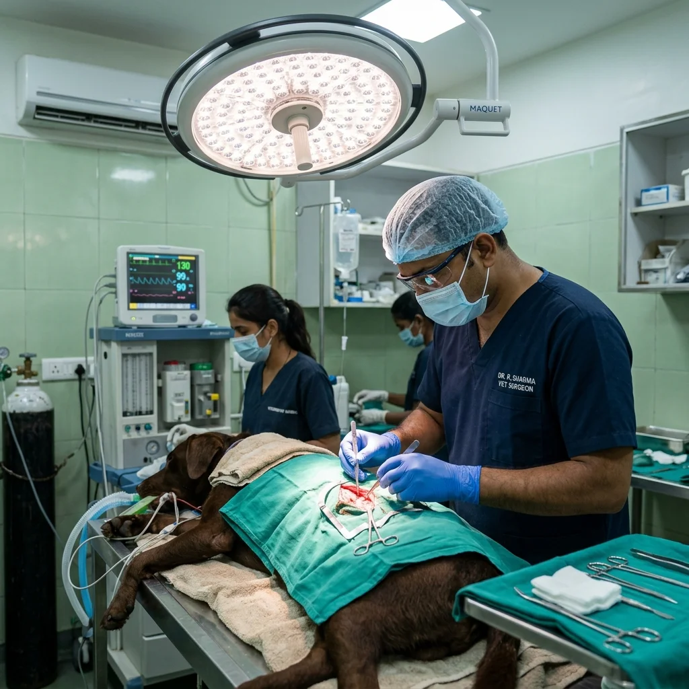
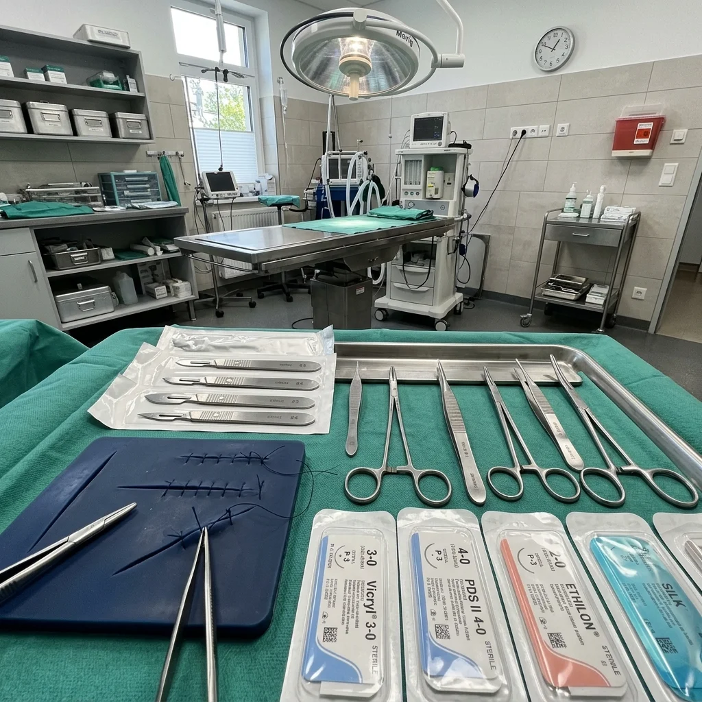

Soft Tissue Surgery & Procedural Workshop
Gain hands-on surgical precision through intensive wet labs, sterile technique discipline, suture pattern mastery, delicate tissue handling, and live surgical procedure guidance.
- Aseptic Scrubbing & Sterile OR Prep
- Surgical Instrument Ergonomics
- 10+ Suture Patterns & Knot Precision
- Atraumatic Tissue Handling Protocols
- Live Surgical Demo & Wet-Lab Practice

✂️ Sterile OR Mastery 👨⚕️ Senior Surgical Mentors 🩺 Live Surgical Practice ⭐ 4.9 Student RatingOvercoming Operating Room Hesitation
Why stepping into independent abdominal surgery requires tactile muscle memory and strict aseptic discipline.

Mastering Tactile Precision under Pressure
Performing soft tissue surgeries like spays, neuters, cystotomies, and enterotomies requires more than knowing anatomy on paper. Young veterinary surgeons frequently face practical hurdles:
What You Will Achieve
Concrete procedural skills you will execute independently by the end of this workshop.
Sterile Technique & Asepsis
Execute surgical hand scrubbing, closed gowning, gloving, patient skin preparation, and quadruped sterile draping.
Surgical Instrument Ergonomics
Master needle holder grips, thumb forceps tension, scalpel handle control (pencil vs. grip), and tissue scissor dexterity.
Suturing & Knot Tying Finesse
Execute simple interrupted, continuous, Ford interlocking, Gambee, and subcuticular closure patterns with zero slippage.
Atraumatic Tissue Handling
Prevent tissue desiccation, maintain gentle retraction, control micro-hemorrhage, and preserve vascular supply.
Abdominal Organ Surgeries
Perform complete ovariohysterectomy, canine/feline castration, cystotomy for uroliths, and intestinal enterotomy closures.
Surgical Skill Certification
Earn an official VetNova Soft Tissue Surgery Competency Credential validating 40 intensive practical surgical lab hours.
Explore Other Training Modules
Structured hands-on modules designed for BVSc interns, fresh graduates, practicing clinicians, and vet assistants.
Veterinary Skill-Up Program
4-Week comprehensive clinical mastery module covering soft tissue surgery, digital radiology reading, ultrasound scanning, and emergency triage.
Soft Tissue Surgery Track
Intensive hands-on procedural workshop covering sterile OR setup, tissue handling, suture patterns, spay/neuter, and intestinal cystotomy closures.
Radiology & Ultrasound Masterclass
Systematic abdominal & thoracic radiograph interpretation alongside hands-on abdominal ultrasound probe handling and FAST scanning.
Pet Emergency & Critical Care
Handling shock, toxic ingestion, cardiac arrest, fluid resuscitation, multiparameter vitals monitoring, and emergency patient triage.
Vet Nurse Foundation Certificate
Foundational practical training for clinic assistants and paravet staff covering animal restraint, surgical scrub support, catheter prep, and sanitization.
Pet Emergency First Aid Workshop
Designed for pet parents, rescuers, and animal lovers to stabilize pets during life-threatening choking, bleeding, or heat stroke emergencies.
Surgical Workshop Curriculum
Intensive 1-week syllabus structured for maximum tactile repetition and live procedure guidance.
Sterile Technique, Ergonomics & Knot Tying
Establishing aseptic discipline, instrument handling dexterity, and executing 100+ surgical knots on synthetic tissue models.
- Surgical scrub technique, gowning, gloving, and sterile field maintenance.
- Needle holder finger grip mechanics & scalpel pencil grip control.
- Suture patterns: Simple interrupted, simple continuous, Ford interlocking, subcuticular.
- Practical Lab: 12+ hours intensive knot tying and suture pattern speed drills.
Abdominal Incisions & Ovariohysterectomy (Spay)
Step-by-step anatomical approach to ventral midline laparotomy and pedicle ligation in canine and feline patients.
- Linea alba identification, falciform fat management, and abdominal entry.
- Ovarian pedicle triple clamp technique and modified Miller's knot application.
- Uterine body ligation & cervical stump closure protocols.
- Practical Lab: Supervised anatomical model & tissue pedicle dissection practice.
Cystotomy & Gastrointestinal Surgery
Procedural execution of urinary bladder entry for urolith removal and intestinal enterotomy closure integrity testing.
- Ventral cystotomy incision, stone retrieval, and double-layer inverted bladder closure.
- Intestinal foreign body localization, enterotomy incision, and Gambee suture pattern.
- Leak testing under hydrostatic pressure and omental patching techniques.
- Practical Lab: Tissue model cystotomy & enterotomy leak-tight closure assessment.
Wound Management, Hemostasis & Live Demo
Managing active surgical hemorrhage, traumatic wound debridement, bandaging, and live operating theater observation.
- Electrosurgery usage, vessel ligations, and topical hemostatic agents.
- Wound debridement, passive/active drain placement, and tension-relieving sutures.
- Post-operative analgesia protocols and incision monitoring checklist.
- Practical Lab: Live surgical demonstration and capstone surgical dexterity evaluation.
Surgical Training Delivery
Designed for maximum tactile immersion under direct senior surgical mentorship.
Modern Surgical Suite
Dedicated operating tables equipped with shadowless LED lamps and electrocautery units.
Strict 8-Doctor Batches
Strictly capped small batch size to ensure every doctor receives individualized surgical coaching.
30+ Wet Lab Hours
Over 75% of workshop duration dedicated to hands-on suture practice and procedural execution.
Live Surgical Guidance
Direct real-time feedback from MVSc surgical specialists during wet lab procedure trials.
Who Should Join This Workshop
Ideal for veterinary doctors looking to eliminate surgical hesitation and master abdominal procedures.
Final-Year BVSc Interns
Develop independent surgical skills before entering clinical practice upon graduation.
Fresh Vet Graduates
Transition smoothly from university theory to executing confident soft tissue procedures.
General Practitioners
Expand in-house surgical services by adding cystotomy, enterotomy, and spay surgeries.
Shelter & NGO Vets
Increase surgical speed and efficiency for high-volume spay-neuter animal welfare programs.
Meet Your Surgical Faculty
Learn directly from board-certified veterinary surgeons with decades of operating room experience.

Dr. Amit Kulkarni
BVSc & AH, MVSc (Surgery)Soft Tissue Surgery & Wound Management Lead Mentor.

Dr. Priya Sharma
BVSc & AH, MVSc (Radiology & Surgery)Surgical Anatomy & Diagnostic Imaging Specialist.

Dr. Rajesh Verma
BVSc & AH, MVSc (Critical Care)Perioperative Anesthesia & Pain Management Lead.
Surgical Competency Certification
Upon completing the 1-week intensive workshop and practical knot assessment, trainees receive a formal VetNova Certificate of Soft Tissue Surgical Competency.
Program Fee & Enrollment Details
All-inclusive pricing. Suture materials, instruments, practice pads, and lab supplies included.
Soft Tissue Surgery Track
1-Week Offline Intensive Surgical Workshop
- 30+ Hours hands-on surgical wet lab access
- All suture kits & organ models provided
- Direct mentor feedback on knot security
- Official Surgical Competency Certificate
- Post-workshop surgical consultation support
Surgical Workshop FAQs
Answers to common questions about prerequisites, surgical practice materials, and batch timing.
No. The workshop is structured to build skills from fundamental instrument handling and knot tying up to complex abdominal closures, making it perfect for interns and fresh graduates.
Yes, all premium surgical instruments, suture practice pads, absorbable/non-absorbable sutures, and organ models are fully provided in our surgical suite.
Yes, trainees observe live surgical demonstrations conducted by senior MVSc surgical faculty in our operating theater with real-time commentary.
Yes, our student coordination team assists outstation doctors with verified hostel and hotel options near our Wagholi campus.
Trainee Testimonials
Hear how doctors transformed their surgical confidence through this 1-week track.
"The hands-on knot tying and enterotomy closure practice in this workshop gave me incredible confidence. Dr. Kulkarni corrected my instrument grip on day one. I performed my first independent canine spay two weeks after returning to my clinic!"

Elevate Your Surgical Confidence Today
Seats are strictly capped at 8 doctors per batch for maximum mentor attention. Apply now for the upcoming surgical workshop.